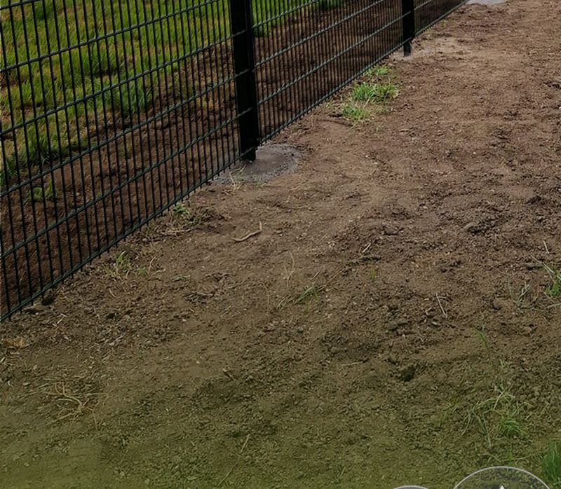
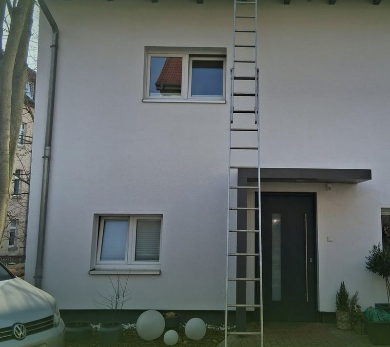
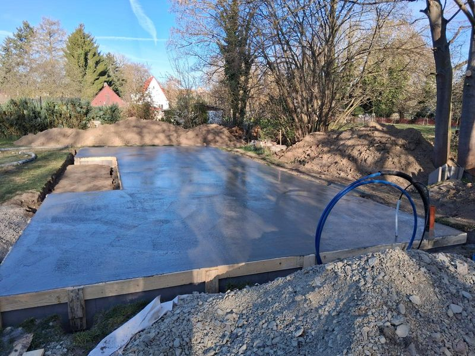

Projekte
Referenzen direkt von der Baustelle.
Keine Stockfotos, keine Show: Diese Bilder stammen aus echten Projekten von Galabau Böttcher im Kyffhäuserkreis, in Erfurt und Umgebung.
{kind=link}

Zaunbau
Doppelstabmattenzaun am Einfamilienhaus
Für ein Wohngrundstück haben wir die komplette Einfriedung erneuert: alte Elemente entfernt, Fundamente gesetzt und einen stabilen Doppelstabmattenzaun montiert. Der Pflanzstreifen entlang des Zauns wurde gleich mit vorbereitet.
Das Ergebnis: eine klare Grundstücksgrenze, die Sicherheit bietet und dem Garten Struktur gibt – montiert in wenigen Tagen.

Abbruch & Rückbau
Rückbau eines Nebengebäudes
Ein nicht mehr genutztes Nebengebäude musste weichen. Mit dem Minibagger haben wir das Mauerwerk kontrolliert abgetragen – auch bei winterlichen Bedingungen sicher und zügig.
Die Materialien wurden sortenrein getrennt und fachgerecht entsorgt. Die Fläche steht jetzt für die Neugestaltung bereit.
{kind=link}

Dachpflege
Dachpflege am Wohnhaus
Moos und Ablagerungen setzen jedem Dach zu. Bei diesem Wohnhaus haben wir die Dachfläche schonend gereinigt und gepflegt – für eine längere Lebensdauer und ein gepflegtes Gesamtbild.
Auf Wunsch kombinieren wir die Dachpflege mit der Reinigung von Dachrinnen und gepflasterten Flächen.
Der Unterschied
Vorher / Nachher
Ziehen Sie den Regler und sehen Sie den Unterschied – von der ausgehobenen Baugrube bis zur fertig gegossenen Bodenplatte.

Ihr Projekt könnte das nächste sein
Lassen Sie uns über Ihre Außenanlage sprechen.
Unverbindliche Beratung, ehrliches Angebot, saubere Umsetzung – melden Sie sich einfach.